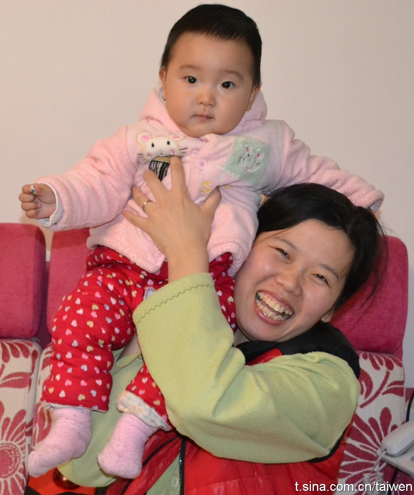

生日快乐@霍太稳:今天是我家闺女#嘉怡贝贝#的生日，为纪念这个日子我购买了5本《Facebook效应》和5套《粮民：中国农村会消失吗？》送给看到此信息顺手转发并送上祝福的朋友，同乐12月20日！ 
十多年前我上中学时，书很金贵。我买到胡编乱造，甚至错误多多的书籍就会很生气，气自己，也气编者，就在编者的名字周围画个黑框泄愤，当时被好友批评，还惭愧了一阵儿。但今天在家，看到女儿的一本英语辅导书，又邪恶地想画黑圈了。